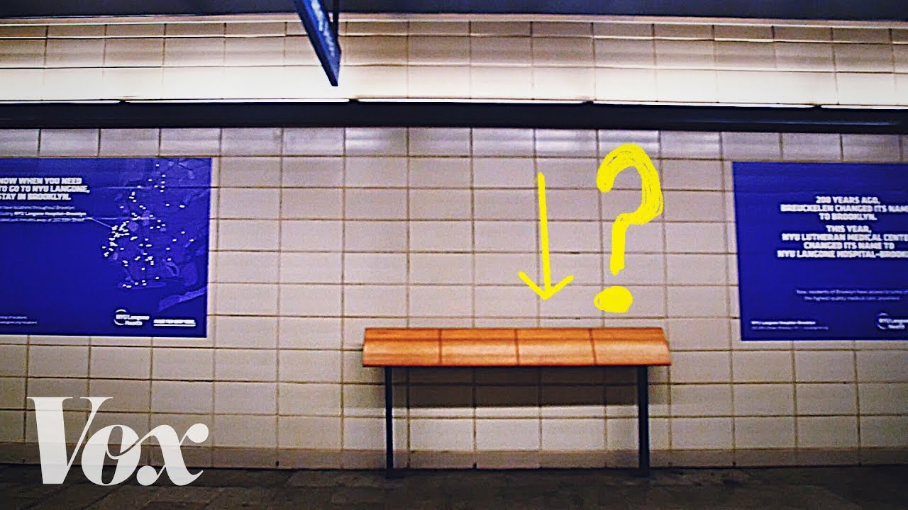

Writing a Paper Is Telling a Story
The Value of Clear Communication in Academic Research
Muzeeb Shaik
Assistant Professor of Marketing
Kelley School of Business
Indiana University, Bloomington
About Me
- Ph.D., Marketing – Mays Business School, Texas A&M University, 2022
- Assistant Professor of Marketing – Kelley School of Business, Indiana University, Bloomington
- Two streams of research:
- Marketing and Society
- B2B Marketing
- The paper I am sharing today is from my Marketing and Society stream
Building on Dr. Sreenivasan’s Talk
Dr. Sreenivasan gave you the frameworks:
- Clarity beats volume – cognitive load theory
- Structure beats improvisation – Minto Pyramid Principle
- Delivery beats design
- Audience beats speaker
I am going to show you what happens when you violate those principles – and what it looks like when you finally get them right.
A Confession
- As PhD students, you are full of ideas. That is a good thing.
- But having great ideas is not enough. You have to tell a clear story.
A paper is not a report of everything you did. A paper is a story – with a beginning, a middle, and an end.
If the story wanders, the reader gets lost. And a lost reviewer is a reviewer who says “no.”
The Early-Career Trap
You will be tempted to do all of the following in your early projects:
- Study multiple outcome variables (“the more, the better!”)
- Run every analysis you can think of (“let’s show how thorough we are!”)
- Include every interesting result (“this is too cool to cut!”)
- Avoid committing to one mechanism (“what if we’re wrong?”)
A paper that tries to say everything ends up saying nothing. Remember Dr. Sreenivasan’s point: cognitive overload is real – for reviewers too.
Have You Watched Vox?
How many of you have watched a Vox video?
They take complex topics and make them intuitive. 11M+ subscribers. Why? Exceptional storytelling.
Let me break down their formula.

The Vox Formula: 5 Moves
- Open with the question, not the answer. They make you want to know before they tell you anything.
- Build understanding layer by layer. Each piece earns its place by setting up the next.
- One throughline, not many. One question per video. Everything else gets cut.
- Explain the “why” early. Not just “this happened” but why it happened and why you should care.
- Meet the audience where they are. Conversational, not academic. Clarity over cleverness.
The Vox Formula Applied to Papers
| Vox | Your Paper |
|---|---|
| Open with the question | Introduction makes the reader care before seeing results |
| Build layer by layer | Each section sets up the next – lit review earns the hypothesis |
| One throughline | One research question, one story – not three DVs in different directions |
| Explain the “why” early | Mechanism in the framework, not hand-waved in the discussion |
| Meet the audience | Write for a smart reviewer who is not in your exact subfield |
A Cautionary Tale
What happens when the story is not clear – from my own experience
The Paper
How do fatal school shootings affect the economic activity of the surrounding community?
Take a minute: how would you approach this? What outcome variables, identification strategy, and mechanism would you consider?
- Data: 69 incidents (2012-2019), NielsenIQ Homescan, Zillow
- Method: Difference-in-differences (treatment counties vs. matched neighbors)
Good question. Rich data. Sound methods.
Two reject-and-resubmits before we found the right journal – where it got conditionally accepted after one round of revision.
The Timeline
| Date | Event | Outcome |
|---|---|---|
| Sep 2023 | 1st submission to Frontiers in Marketing Science | |
| Oct 2023 | Decision | Reject & Resubmit |
| Mar 2024 | 2nd submission to Frontiers in Marketing Science | |
| Mid 2024 | Decision | Reject & Resubmit |
| Jul 2024 | Submitted to JMR | Smoother |
Editor: “It is very unusual for the same paper to receive a reject and resubmit twice in a row.”
Where the Story Went Wrong
Three mistakes that kept the story from working
Mistake #1: We Tried to Say Too Much
Version 1 studied three outcome variables: grocery purchases, vice goods (alcohol + cigarettes), and home values
We thought: more outcomes = more comprehensive = more impressive
Version 1: The Results Were All Over the Place
- Groceries: ~1% decline, but only in liberal-leaning counties
- Vice goods: No change in alcohol, but 13% drop in cigarettes – only in conservative-leaning counties
- Home values: 6.5% decline – only in conservative-leaning counties
Every result pointed in a different direction for a different subgroup.
We also checked two health indices for diet quality – no significant effects. We were reporting a collection of findings, not a story.
Too Many Outcomes: What the Reviewers Thought
R1: “Findings have no theoretical grounding. Some effects in conservative counties, some in liberal, no explanation for why”
R2: “My main concern surrounds the ‘Why?’”
Three plots, no throughline. We did not know where we were going – so neither could the reviewers.
Mistake #2: “What” Without “Why”
This is exactly the framing failure Dr. Sreenivasan described – we showed what we studied but failed to articulate why it matters.
AE: “Without a context for why we might expect these effects… it is harder to contextualize”
R1: “Is this because people are eating less? Eating less at home?”
A finding without a mechanism is a fact, not a story.
Round 2: Tighter, But Still No “Why”
We dropped vice goods. Improved identification. Added a consolidation story.
- Groceries: 1.35% decline overall (not just liberal counties)
- Consolidation: Fewer stores, fewer categories, fewer new products
- Home values: 3.2% decline (down from 6.5% after better estimation)
But still no direct evidence for why the effect happened.
Round 2: Same Question Again
AE: “50 cents per household per week is small… we’d have to worry about economic significance”
Editor: “Seriously consider sending the paper to another journal”
Same question, two rounds. The problem was our communication.
The Turning Point
What changed for JMR
We Found the Story
We asked: What is the one story this paper tells?
- Narrowed scope: One outcome (groceries), not three
- Built a framework: Anxiety as the mechanism
- Added three experiments to directly test the “why”
- Grounded the ideology story in motivated social cognition
Version 3: Every Result Served the Story
- Groceries: 1.35% decline overall, 2.62% in liberal counties
- Consolidation with a reason: Shopping days down 0.85%, stores down 0.93%, categories down 1.05% – avoidance of public spaces
- Sugar and added sugar also declined – ruling out comfort eating
- Study 2: Text analysis confirmed anxiety (not sadness, not mortality salience)
- Study 3: Self-reported anxiety mediated the effect
- Study 4: Moderated mediation by political ideology
Now every finding pointed in the same direction. One story.
Before and After
BEFORE
“Groceries decline, vice goods change, home values fall. Might be anxiety or coping. Not sure. Effects differ by politics. Not sure why.”
Three plots. No throughline.
AFTER
“School shootings trigger anxiety about public safety, reducing grocery shopping. Stronger for liberals due to how they attribute gun violence.”
One story. Clear throughline.
The Structure Told the Story
| Study | Role | What It Does |
|---|---|---|
| Study 1 | The effect | Empirical: grocery purchases decline, consolidation |
| Study 2 | The “why” | Experiment: anxiety via text analysis |
| Study 3 | Confirm | Experiment: self-reported anxiety |
| Study 4 | “For whom” | Experiment: moderated mediation by ideology |
Each study = a chapter. Each chapter advances the plot.
The Numbers
| MktSci 1st | MktSci 2nd | JMR | |
|---|---|---|---|
| Outcomes | 3 | 2 | 1 |
| Mechanism | None | Weak | Clear |
| Experiments | 0 | 0 | 3 |
| Result | R&R | R&R | Smoother |
Fewer outcomes. Clearer mechanism. Better story. Better result.
And the Story Continues…
- This paper is now a finalist for the Paul Green/Vithala Rao Award for best paper published in the Journal of Marketing Research.
- The ideas were always good. The data was always rich. What changed was the story.
- We discussed the full journey on JMR’s How I Wrote This podcast (Ep. 23). Listen if you are interested – not just this episode, the entire series is a great resource.
How I Wrote This – Ep. 23
Takeaways
What I wish someone had told me
Five Things I Wish I Knew
- One question, one story. If you need more than two sentences to explain your paper, the story is not clear.
- Cutting is sharpening. Dropping content makes papers stronger, not weaker. Clarity beats volume.
- The “why” is not optional. A finding without a mechanism does not get published.
- Listen to repeated feedback. If two people ask the same question, it is your communication, not their comprehension. Audience beats speaker.
- Structure is communication. Every section should advance the plot. Structure beats improvisation.
One Last Thing
When a paper struggles – and it will – ask yourself:
- Is my story clear?
- Am I trying to say too much?
- Have I explained the “why”?
A good idea poorly communicated is a missed opportunity. Do not let your ideas down by not telling their story well.
Thank You!
Writing a paper is telling a story. Tell yours well.
Muzeeb Shaik
shaikmu@iu.edu
Gig ’Em Aggies!